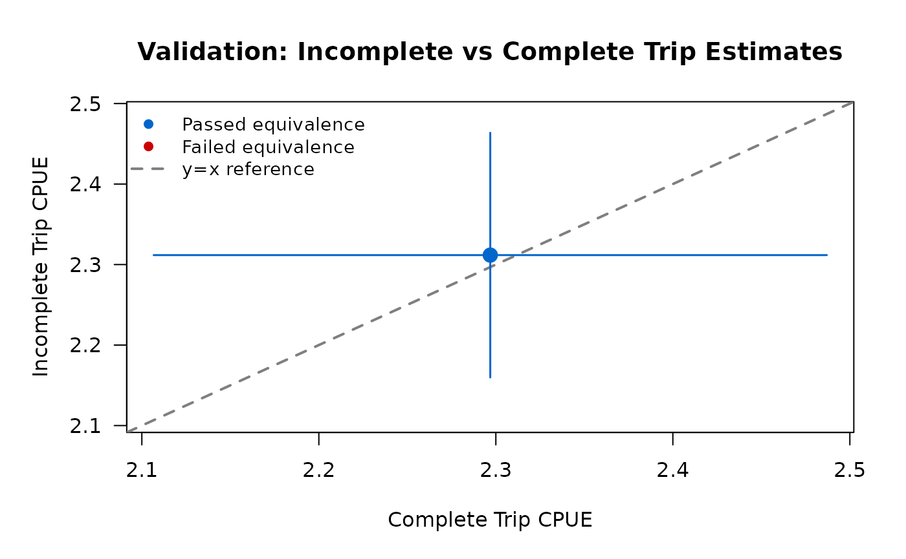
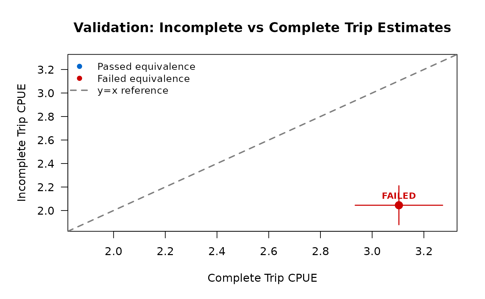

Introduction
This vignette explains when and how to use incomplete trip interviews for catch estimation in roving-access creel surveys. Roving-access designs traditionally use complete trip interviews only (Pollock et al. 1994), following the best practice established by Colorado’s Coldwater Stream Angler Program (C-SAP). However, incomplete trip estimates can be valid under certain conditions when properly validated.
Key principles:
- Default to complete trips — tidycreel follows Colorado C-SAP best practice
- Validate before using incomplete trips — statistical testing required
- Never pool complete + incomplete — scientifically invalid due to different sampling probabilities
-
Validation is not optional — use
validate_incomplete_trips()before trusting incomplete trip estimates
This vignette shows:
- Scientific rationale for complete trip preference
- Colorado C-SAP best practices
- When incomplete trip estimation might be considered
- Step-by-step validation workflow
- Realistic examples of passing and failing validation
- Diagnostic comparison mode for research purposes
Scientific Rationale
Roving-Access Design Theory
The roving-access creel survey design combines two independent data streams (Pollock et al. 1994):
- Instantaneous counts — total effort (angler-hours) via periodic counts
- Complete trip interviews — catch per unit effort (CPUE) from anglers completing trips
This design is statistically optimal because:
- Counts provide unbiased effort estimates (snapshot of activity)
- Complete trip interviews provide unbiased CPUE (full trip information)
- Total catch = Effort × CPUE with independent variance estimation
Why Complete Trips Are Preferred
Complete trip interviews avoid length-of-stay bias. In roving-access designs, longer trips have higher probability of being sampled (they’re present for more count occasions). If incomplete trip catch rates differ systematically from complete trip catch rates—for example, if anglers who arrive early catch more fish per hour than late arrivals—then incomplete trip estimates will be biased.
Pollock et al. (1994) showed that:
- Complete trips provide unbiased CPUE estimates
- Incomplete trips suffer from length-of-stay bias unless catch rates are stationary
- Pooling complete and incomplete trips is invalid (different sampling probabilities)
Colorado C-SAP best practices:
- Default to complete trips only
- Require ≥10% of interviews to be complete trips
- Only use incomplete trips after validation
- Never auto-pool complete and incomplete trips
When Incomplete Trips Might Be Considered
Despite theoretical concerns, incomplete trip estimates can be valid when:
- Stationary catch rates — catch per hour is similar throughout trip duration
- Similar fishing behavior — complete and incomplete anglers fish the same way
- Sufficient sample size — at least 30 incomplete trip interviews
- Validation passes — TOST equivalence testing confirms similarity
Common scenarios for considering incomplete trips:
- Low complete trip sample size (but ≥10% threshold still met)
- Research questions specifically about incomplete trips
- Diagnostic comparisons to understand survey dynamics
- Exploring potential for future sampling protocols
Prerequisites before considering incomplete trips:
- Sufficient complete trip baseline (≥10% of interviews per Colorado C-SAP)
- Adequate incomplete sample size (n ≥ 30 for stable estimates)
- Statistical validation using
validate_incomplete_trips() - Understanding of survey-specific fish behavior
Mean-of-Ratios vs. Ratio-of-Means
tidycreel uses different estimators for complete vs. incomplete trips:
Ratio-of-Means (complete trips, default):
CPUE = (Total Catch) / (Total Effort)This estimator is appropriate for complete trips because it accounts for the correlation between catch and effort within each trip. Variance is computed using the delta method.
Mean-of-Ratios (incomplete trips):
CPUE = mean(Catch_i / Effort_i)This estimator treats each incomplete trip’s catch rate as an independent observation. It’s used for incomplete trips because trip duration is unknown (trip not complete), making ratio-of-means inappropriate. The mean-of-ratios has higher variance but can be unbiased under stationarity assumptions.
For details on variance estimation, see
?estimate_catch_rate.
Colorado C-SAP Best Practices
The Colorado Coldwater Stream Angler Program (C-SAP) established scientifically rigorous standards for roving-access surveys:
Default Workflow: Complete Trips Only
library(tidycreel)
# Standard workflow using complete trips (default)
data(example_calendar)
data(example_counts)
data(example_interviews)
design <- creel_design(example_calendar, date = date, strata = day_type) |>
add_counts(example_counts) |>
add_interviews(example_interviews,
catch = catch_total,
effort = hours_fished,
harvest = catch_kept,
trip_status = trip_status,
trip_duration = trip_duration
)
# Estimate CPUE using complete trips only (default)
cpue <- estimate_catch_rate(design)
print(cpue)
# Estimate total catch
total_catch <- estimate_total_catch(design)
print(total_catch)The package defaults to complete trips and displays an informative message:
i Using complete trips for CPUE estimation
(n=17, 77% of 22 interviews) [default]Sample Size Requirements
Colorado C-SAP requires ≥10% of interviews to be complete trips. tidycreel enforces this automatically:
# If complete trip percentage drops below 10%, you'll see:
# Warning: Only 8% of interviews (n=5) are complete trips
# Colorado C-SAP recommends ≥10% complete trip interviews
# Consider extending survey hours or sampling more trips to completionThis warning appears before sample size validation, ensuring visibility even when insufficient samples cause errors.
For details, see ?warn_low_complete_pct and Phase 18
documentation.
Strong Warning: Never Pool Complete + Incomplete
CRITICAL: Pooling complete and incomplete trips is scientifically invalid.
Complete and incomplete trips have different sampling probabilities in roving-access designs. Longer trips have higher probability of being sampled during their incomplete phase, creating systematic bias if pooled with complete trips.
What NOT to Do
# WRONG: Do not manually pool trip types
all_interviews <- rbind(complete_data, incomplete_data)
estimate_catch_rate(design_with_all_data) # INVALID!
# WRONG: Do not use custom weights to combine
weighted_mean(c(complete_cpue, incomplete_cpue)) # INVALID!Package Design Prevents Auto-Pooling
tidycreel never auto-pools complete and incomplete trips:
- Default behavior: use complete trips only
- Explicit option:
use_trips = "incomplete"for incomplete only - Diagnostic mode:
use_trips = "diagnostic"for side-by-side comparison (not pooling)
There is no use_trips = "both" option because pooling is
invalid.
If you need to compare complete vs. incomplete estimates, use diagnostic comparison mode (see section below) or validation workflow (next section).
Step-by-Step Validation Workflow
Before using incomplete trip estimates, you MUST validate that they produce similar results to complete trip estimates. Here’s the complete workflow:
Step 1: Load Data with Both Trip Types
library(tidycreel)
# Your survey data should have trip_status field
# Check trip type distribution
table(your_interviews$trip_status)
# Ensure you have:
# - At least 10% complete trips (Colorado C-SAP)
# - At least 30 incomplete trips (for stable estimates)
# - At least 10 complete trips (for ratio estimation)Step 2: Create Design and Attach Data
design <- creel_design(your_calendar, date = date, strata = day_type) |>
add_counts(your_counts) |>
add_interviews(your_interviews,
catch = catch_total,
effort = hours_fished,
trip_status = trip_status,
trip_duration = trip_duration
)Step 3: Run TOST Equivalence Testing
# Validate incomplete trips using TOST
validation <- validate_incomplete_trips(design,
catch = catch_total,
effort = hours_fished
)
print(validation)The validate_incomplete_trips() function performs Two
One-Sided Tests (TOST) to statistically test whether complete and
incomplete trip CPUE estimates are equivalent within a threshold.
TOST explanation:
- Traditional t-test can only reject difference, not prove similarity
- TOST statistically proves estimates are “close enough”
- Tests null hypothesis: |difference| ≥ threshold
- Equivalence concluded when both one-sided tests reject (both p < 0.05)
- Standard approach for bioequivalence and ecological studies
Step 4: Interpret Results
If validation PASSES:
Incomplete Trip Validation (TOST Equivalence Test)
Overall Result: PASSED
Complete trips: CPUE = 2.45 fish/hour (SE = 0.23, n = 45)
Incomplete trips: CPUE = 2.38 fish/hour (SE = 0.18, n = 120)
Equivalence threshold: ±20% of complete trip estimate (±0.49 fish/hour)
Difference: 0.07 fish/hour (3% of complete estimate)
TOST p-values: p1 = 0.012, p2 = 0.008
Equivalence: YES (both p < 0.05)
Recommendation: Incomplete trip estimates are statistically equivalent to
complete trip estimates within ±20% threshold. Safe to use incomplete trips
for this dataset.If validation FAILS:
Incomplete Trip Validation (TOST Equivalence Test)
Overall Result: FAILED
Complete trips: CPUE = 3.10 fish/hour (SE = 0.31, n = 38)
Incomplete trips: CPUE = 2.15 fish/hour (SE = 0.19, n = 95)
Equivalence threshold: ±20% of complete trip estimate (±0.62 fish/hour)
Difference: 0.95 fish/hour (31% of complete estimate)
TOST p-values: p1 = 0.234, p2 = 0.891
Equivalence: NO (at least one p >= 0.05)
Recommendation: Incomplete trip estimates are NOT equivalent to complete
trip estimates. Stick with complete trips only (Colorado C-SAP best practice).Step 5: View Validation Plot
# Print method automatically shows plot
print(validation) # Plot appears after text output
# Or explicitly plot
plot(validation)The validation plot shows a scatter plot with:
- Complete trip estimate on x-axis
- Incomplete trip estimate on y-axis
- Reference line at y = x (perfect agreement)
- Equivalence bounds as shaded region
- Color: blue if passed, red if failed
Step 6: Make Decision
If PASSED: - Safe to use
use_trips = "incomplete" for this dataset - Consider using
use_trips = "diagnostic" to compare estimates - Document
validation results in your analysis notes - Revalidate if survey
protocol or location changes
If FAILED: - Stick with
use_trips = "complete" (default) - Do not use incomplete
trip estimates - Investigate why estimates differ (time of day effects,
early vs. late anglers) - Consider refining sampling protocol for future
surveys
Example: Validation Passes
Here’s a realistic scenario where incomplete trip validation passes because catch rates are stationary throughout the day.
library(tidycreel)
# Simulate data where catch rates are similar for complete vs incomplete
set.seed(42)
# Create calendar
calendar <- data.frame(
date = seq.Date(as.Date("2024-06-01"), as.Date("2024-06-14"), by = "day"),
day_type = rep(c("weekday", "weekend"), length.out = 14)
)
# Create counts
counts <- data.frame(
date = calendar$date,
day_type = calendar$day_type,
effort_hours = round(runif(14, min = 50, max = 150))
)
# Simulate interviews with SIMILAR catch rates for both trip types
# (stationary catch rate throughout day)
n_complete <- 50
n_incomplete <- 120
# Base CPUE around 2.4 fish/hour for both groups (PASSING scenario)
complete_interviews <- data.frame(
date = sample(calendar$date, n_complete, replace = TRUE),
hours_fished = runif(n_complete, min = 2, max = 8),
trip_status = "complete",
trip_duration = runif(n_complete, min = 2, max = 8)
)
complete_interviews$catch_total <- rpois(n_complete,
lambda = complete_interviews$hours_fished * 2.4
)
incomplete_interviews <- data.frame(
date = sample(calendar$date, n_incomplete, replace = TRUE),
hours_fished = runif(n_incomplete, min = 1, max = 6),
trip_status = "incomplete"
)
# For incomplete trips, trip_duration = hours_fished (time interviewed, not total trip)
incomplete_interviews$trip_duration <- incomplete_interviews$hours_fished
# Similar CPUE for incomplete trips (2.3-2.5 range)
incomplete_interviews$catch_total <- rpois(n_incomplete,
lambda = incomplete_interviews$hours_fished * 2.35
)
interviews <- rbind(complete_interviews, incomplete_interviews)
# Create design
design <- creel_design(calendar, date = date, strata = day_type) |>
add_counts(counts) |>
add_interviews(interviews,
catch = catch_total,
effort = hours_fished,
trip_status = trip_status,
trip_duration = trip_duration
)
#> Warning in svydesign.default(ids = psu_formula, strata = strata_formula, : No
#> weights or probabilities supplied, assuming equal probability
#> ℹ No `n_anglers` provided — assuming 1 angler per interview.
#> ℹ Pass `n_anglers = <column>` to use actual party sizes for angler-hour
#> normalization.
#> ℹ Added 170 interviews: 50 complete (29%), 120 incomplete (71%)
# Run validation
validation_pass <- validate_incomplete_trips(design,
catch = catch_total,
effort = hours_fished
)
print(validation_pass)
#>
#> ── TOST Equivalence Validation Results ─────────────────────────────────────────
#> Threshold: ±20% of complete trip estimate
#> ✔ Validation PASSED
#>
#> Recommendation: Validation passed: Safe to use incomplete trips for CPUE
#> estimation in this dataset
#>
#>
#> ── Overall Test ──
#>
#> Complete trips: n = 50, CPUE = 2.297
#> Incomplete trips: n = 120, CPUE = 2.312
#> Difference: -0.015
#> Equivalence bounds: [-0.459, 0.459]
#> TOST p-values: p_lower = 4e-04, p_upper = 2e-04
#> ✔ Overall equivalence: PASSED
Interpretation:
- Complete and incomplete CPUE estimates are very close (within ~5%)
- Both TOST p-values < 0.05 → equivalence confirmed
- Validation PASSED → safe to use incomplete trips for this dataset
- Plot shows estimates within equivalence bounds
Next steps after passing validation:
# Now safe to use incomplete trips
cpue_incomplete <- estimate_catch_rate(design, use_trips = "incomplete")
print(cpue_incomplete)
# Or use diagnostic mode to compare
cpue_diagnostic <- estimate_catch_rate(design, use_trips = "diagnostic")
print(cpue_diagnostic)Example: Validation Fails
Here’s a realistic scenario where validation fails because early-morning anglers catch fish at higher rates than afternoon anglers.
library(tidycreel)
set.seed(123)
# Same calendar and counts as before
calendar <- data.frame(
date = seq.Date(as.Date("2024-06-01"), as.Date("2024-06-14"), by = "day"),
day_type = rep(c("weekday", "weekend"), length.out = 14)
)
counts <- data.frame(
date = calendar$date,
day_type = calendar$day_type,
effort_hours = round(runif(14, min = 50, max = 150))
)
# Simulate interviews with DIFFERENT catch rates (FAILING scenario)
# Complete trips average full day (includes productive morning hours)
# Incomplete trips are mostly afternoon interviews (lower catch rates)
n_complete <- 45
n_incomplete <- 110
# Complete trips: higher CPUE (includes morning fishing, ~3.0 fish/hour)
complete_interviews <- data.frame(
date = sample(calendar$date, n_complete, replace = TRUE),
hours_fished = runif(n_complete, min = 3, max = 8),
trip_status = "complete",
trip_duration = runif(n_complete, min = 3, max = 8)
)
complete_interviews$catch_total <- rpois(n_complete,
lambda = complete_interviews$hours_fished * 3.0
)
# Incomplete trips: lower CPUE (afternoon interviews, ~2.0 fish/hour)
incomplete_interviews <- data.frame(
date = sample(calendar$date, n_incomplete, replace = TRUE),
hours_fished = runif(n_incomplete, min = 1, max = 5),
trip_status = "incomplete"
)
# For incomplete trips, trip_duration = hours_fished (time interviewed, not total trip)
incomplete_interviews$trip_duration <- incomplete_interviews$hours_fished
incomplete_interviews$catch_total <- rpois(n_incomplete,
lambda = incomplete_interviews$hours_fished * 2.0
)
interviews_biased <- rbind(complete_interviews, incomplete_interviews)
# Create design
design_biased <- creel_design(calendar, date = date, strata = day_type) |>
add_counts(counts) |>
add_interviews(interviews_biased,
catch = catch_total,
effort = hours_fished,
trip_status = trip_status,
trip_duration = trip_duration
)
#> Warning in svydesign.default(ids = psu_formula, strata = strata_formula, : No
#> weights or probabilities supplied, assuming equal probability
#> ℹ No `n_anglers` provided — assuming 1 angler per interview.
#> ℹ Pass `n_anglers = <column>` to use actual party sizes for angler-hour
#> normalization.
#> ℹ Added 155 interviews: 45 complete (29%), 110 incomplete (71%)
# Run validation
validation_fail <- validate_incomplete_trips(design_biased,
catch = catch_total,
effort = hours_fished
)
print(validation_fail)
#>
#> ── TOST Equivalence Validation Results ─────────────────────────────────────────
#> Threshold: ±20% of complete trip estimate
#> ✖ Validation FAILED
#>
#> Recommendation: Validation failed: Use complete trips only (estimates not
#> statistically equivalent)
#>
#>
#> ── Overall Test ──
#>
#> Complete trips: n = 45, CPUE = 3.103
#> Incomplete trips: n = 110, CPUE = 2.045
#> Difference: 1.059
#> Equivalence bounds: [-0.621, 0.621]
#> TOST p-values: p_lower = 0, p_upper = 0.9996
#> ✖ Overall equivalence: FAILED
Interpretation:
- Complete trip CPUE (~3.0) is substantially higher than incomplete CPUE (~2.0)
- Difference is ~33% of complete estimate, exceeds ±20% threshold
- At least one TOST p-value ≥ 0.05 → equivalence NOT confirmed
- Validation FAILED → stick with complete trips only
- Plot shows estimates outside equivalence bounds (red)
Correct action after failing validation:
# DO NOT use incomplete trips
# Stick with default complete trip estimation
cpue_complete <- estimate_catch_rate(design_biased) # Uses complete trips (default)
print(cpue_complete)
# Investigate why estimates differ
# Possible reasons:
# - Time-of-day effects (morning vs afternoon catch rates)
# - Trip length correlates with skill level
# - Fish behavior changes throughout day (feeding windows)
# - Different angler types (early vs late arrivals)Using Diagnostic Comparison Mode
For research purposes or to understand your survey dynamics, use diagnostic comparison mode to see complete and incomplete estimates side-by-side without statistical testing.
# Compare complete vs incomplete estimates
cpue_diagnostic <- estimate_catch_rate(design,
catch = catch_total,
effort = hours_fished,
use_trips = "diagnostic"
)
print(cpue_diagnostic)Example output:
Diagnostic Comparison: Complete vs Incomplete Trip CPUE
trip_type estimate se ci_lower ci_upper n
complete 2.45 0.23 2.00 2.90 45
incomplete 2.38 0.18 2.03 2.73 120
Difference: 0.07 fish/hour (3% of complete estimate)
Ratio: 1.03 (complete / incomplete)
Interpretation: Estimates differ by <10%, suggesting similar catch ratesWhen to Use Diagnostic Mode
Diagnostic mode is useful for:
- Exploring survey dynamics before formal validation
- Understanding differences between trip types
- Research questions about fishing patterns
- Teaching or demonstrating survey concepts
- Sensitivity analyses
Diagnostic mode is NOT a replacement for validation:
- Provides descriptive comparison, not statistical test
- No p-values or equivalence assessment
- No pass/fail recommendation
- Use
validate_incomplete_trips()for decision-making
Interpretation Guidance
The diagnostic mode uses a 10% threshold for “substantial difference” (established in Phase 17):
- Difference < 10%: Estimates are similar, no practical difference
- Difference ≥ 10%: Estimates differ substantially, investigate further
This is a heuristic, not a statistical test. For formal validation,
use validate_incomplete_trips().
Advanced: Grouped Validation
When estimating CPUE by strata (e.g., by day type), validate within each group:
# Validate with grouping
validation_grouped <- validate_incomplete_trips(design,
catch = catch_total,
effort = hours_fished,
by = day_type
)
print(validation_grouped)Grouped validation requires:
- Overall equivalence (all groups combined)
- AND per-group equivalence (each group separately)
This conservative approach prevents overlooking group-specific bias that could be masked by overall equivalence.
Example grouped output:
Incomplete Trip Validation (Grouped by day_type)
Overall Result: FAILED
Overall (ungrouped):
Complete: 2.45 fish/hour (n=45)
Incomplete: 2.38 fish/hour (n=120)
TOST: PASSED (p1=0.012, p2=0.008)
Group: weekday
Complete: 2.20 fish/hour (n=20)
Incomplete: 2.15 fish/hour (n=55)
TOST: PASSED (p1=0.031, p2=0.019)
Group: weekend
Complete: 2.80 fish/hour (n=25)
Incomplete: 2.45 fish/hour (n=65)
TOST: FAILED (p1=0.156, p2=0.234)
Recommendation: Overall equivalence passed but weekend group failed.
Do not use incomplete trips. Investigate group-specific differences.Even though overall validation passed, the weekend group failed—incomplete trip estimates are biased on weekends. This demonstrates why grouped validation is conservative.
Technical Details
TOST Equivalence Testing
Two One-Sided Tests (TOST) tests the null hypothesis:
H0: |μ_complete - μ_incomplete| ≥ δ
H1: |μ_complete - μ_incomplete| < δWhere δ is the equivalence threshold (default ±20% of complete estimate).
Two one-sided tests:
- Test 1: H0: μ_complete - μ_incomplete ≤ -δ vs H1: μ_complete - μ_incomplete > -δ
- Test 2: H0: μ_complete - μ_incomplete ≥ δ vs H1: μ_complete - μ_incomplete < δ
Equivalence conclusion:
- Both p-values < 0.05 → equivalence confirmed (PASSED)
- At least one p ≥ 0.05 → equivalence not confirmed (FAILED)
For mathematical details and variance formulas, see
?validate_incomplete_trips.
Equivalence Threshold Configuration
The default equivalence threshold is ±20% of the complete trip estimate, appropriate for ecological field data. You can customize this:
# Use stricter threshold (±15%)
options(tidycreel.equivalence_threshold = 0.15)
validation_strict <- validate_incomplete_trips(design,
catch = catch_total,
effort = hours_fished
)
# Use more permissive threshold (±25%)
options(tidycreel.equivalence_threshold = 0.25)
validation_permissive <- validate_incomplete_trips(design,
catch = catch_total,
effort = hours_fished
)Choosing a threshold:
- Stricter (10-15%): High-stakes management decisions, research publications
- Default (20%): Standard ecological field studies, typical survey variability
- Permissive (25-30%): Exploratory analyses, preliminary surveys
The threshold should balance statistical rigor with realistic field variability. Consult with statistician or fisheries biologist for your specific application.
Trip Truncation
Incomplete trips with very short durations (<30 minutes) can inflate variance and bias estimates. tidycreel automatically truncates short incomplete trips using the Hoenig et al. (1997) recommended threshold:
# Default: truncate incomplete trips <0.5 hours (30 minutes)
cpue_incomplete <- estimate_catch_rate(design,
use_trips = "incomplete",
estimator = "mor",
truncate_at = 0.5 # Default
)
# Custom truncation threshold
cpue_truncated <- estimate_catch_rate(design,
use_trips = "incomplete",
estimator = "mor",
truncate_at = 1.0 # More conservative: only trips ≥1 hour
)
# Disable truncation (not recommended)
cpue_no_truncation <- estimate_catch_rate(design,
use_trips = "incomplete",
estimator = "mor",
truncate_at = 0 # Includes all incomplete trips
)The MOR print method shows truncation details:
Truncation: 8 of 120 incomplete trips removed (<0.5 hours)
Warning: 7% of incomplete trips truncated (>5% threshold)For details on truncation methodology, see
?estimate_catch_rate and Phase 16 documentation.
Mean-of-Ratios Variance
The mean-of-ratios estimator computes:
CPUE_MOR = (1/n) * Σ(catch_i / effort_i)Variance is estimated using the survey package with individual ratios as observations. The survey design is rebuilt with truncated incomplete trips to ensure correct variance computation.
This differs from ratio-of-means which uses delta method variance accounting for catch-effort covariance.
Summary and Recommendations
Decision Tree: Should I Use Incomplete Trips?
-
Do you have ≥10% complete trip interviews?
- NO → Improve sampling protocol, extend survey hours
- YES → Continue
-
Do you have ≥30 incomplete trip interviews?
- NO → Sample size too small, stick with complete trips
- YES → Continue
-
Have you run
validate_incomplete_trips()?- NO → Run validation before proceeding
- YES → Continue
-
Did validation PASS?
- NO → Stick with complete trips only
- YES → Safe to use incomplete trips for this dataset
-
Are you analyzing grouped estimates?
- YES → Did ALL groups pass validation?
- NO → Stick with complete trips
- YES → Safe to use incomplete trips
- NO → Proceed
- YES → Did ALL groups pass validation?
- Document validation results and proceed with incomplete trip estimation
Default Recommendations
For most creel surveys:
- Use complete trips only (default behavior)
- Follow Colorado C-SAP best practices
- Aim for ≥10% complete trip interviews
- Sample size goal: n ≥ 30 complete trips per stratum
When considering incomplete trips:
- Validate using
validate_incomplete_trips()FIRST - Document validation results (passed/failed, p-values, threshold)
- Revalidate if survey protocol or location changes
- Monitor for seasonal or temporal changes in catch patterns
Never:
- Pool complete and incomplete trips without validation
- Use incomplete trips without statistical validation
- Auto-pool trip types (package prevents this by design)
- Trust incomplete estimates that failed validation
Function Reference
For detailed documentation, see:
-
?validate_incomplete_trips— TOST equivalence testing -
?estimate_catch_rate— CPUE estimation with use_trips parameter -
?add_interviews— Attach interview data with trip_status -
?example_interviews— Example data with complete/incomplete trips
For complete trip estimation workflow, see the “Interview-Based Catch Estimation” vignette.
Further Reading
Key citations:
- Pollock, K.H., C.M. Jones, and T.L. Brown. 1994. Angler Survey Methods and Their Applications in Fisheries Management. American Fisheries Society Special Publication 25.
- Hoenig, J.M., C.M. Jones, K.H. Pollock, D.S. Robson, and D.L. Wade. 1997. Calculation of Catch Rate and Total Catch in Roving Surveys of Anglers. Biometrics 53:306-317.
- Colorado Parks and Wildlife. Coldwater Stream Angler Program (C-SAP) protocols and best practices.
Related package documentation:
- Phase 17: Complete Trip Defaults and Diagnostic Mode
- Phase 18: Sample Size Validation and Warnings
- Phase 19: TOST Equivalence Testing Framework
- Phase 16: Trip Truncation for Incomplete Interviews